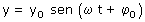
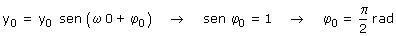
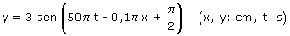

a) Ecuación de la oscilación en el foco:  Determinamos la fase inicial Aplicación: (La elongación de la partícula es la máxima) Datos: t = 0, y = y0, Incógnita: φ0  Sí la elongación inicial de la partícula es la máxima positiva, la fase inicial tendrá que ser: π/2 Parámetros de la onda:
La fase inicial del foco se añade directamente a la fase espacio-temporal de la onda, resultando:  |